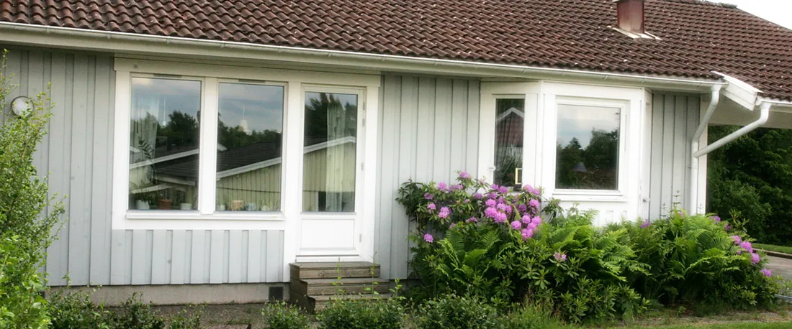
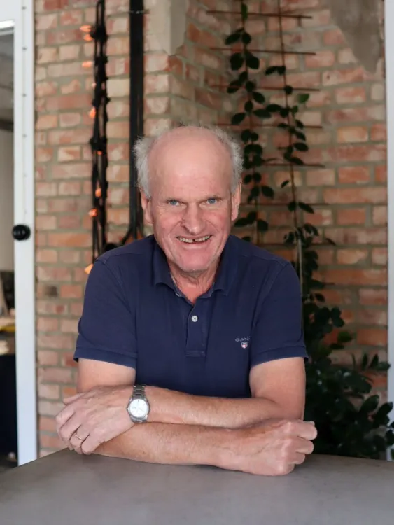

Starten i Limmared.
Fyra parhus blir början på Kettils fastighetsverksamhet.

ETT FAMILJEFÖRETAG MED RÖTTER HÄR
Kettil grundades av Bengt Kettil 1989. I dag omfattar verksamheten både fastigheter och byggkonsultation.

De första husen byggdes i Limmared 1989. Sedan 2005 har Kettil också lägenheter i Tranemo.
Företaget drivs av Bengt och sönerna Johan och Karl. Närheten till orterna där företaget verkar är grunden för ett personligt bemötande.
Med erfarenhet av både förvaltning och byggande möts vardagens behov och den tekniska kunskapen under samma namn.
NÅGRA NEDSLAG
Fyra parhus blir början på Kettils fastighetsverksamhet.
Företaget etablerar lägenheter på ytterligare en ort.
Erfarenheter från förvaltning blir en utgångspunkt för Kettils koncept.

NÄSTA STEG BÖRJAR MED ETT SAMTAL